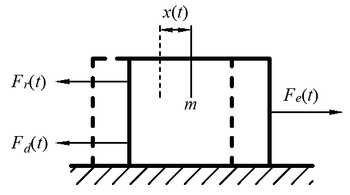
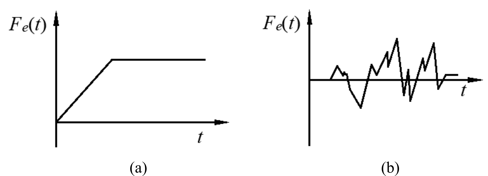

1.1. 引言#
理解和掌握单自由度（Single Degree of Freedom，SDOF）系统的振动特性对初学者来说是至关重要的。一方面，单自由度系统可用于许多实际工程结构的初步设计和分析；另一方面，单自由度系统的一些重要概念、特性和研究方法，又是研究复杂结构系统振动问题的基础。

Fig. 1.1 典型的单自由度系统#
Fig. 1.1给出了两种典型的单自由度系统的力学模型。其中，如 Fig. 1.1(a)所示系统称为弹簧-质量系统（Spring-Mass System），它由刚性质量块、弹簧和阻尼器组成，弹簧和阻尼器的质量与刚性质量块相比可以忽略，系统的位移完全由刚性质量块的位移 \(x\) 确定。如Fig. 1.1(b)所示剪力框架结构，质量主要集中在刚度极大的梁上，柱子质量很小，并且可以按一定方式叠加到梁上。柱子的竖向位移和两端的转动都假定为零，系统的运动由梁的水平位移 \(x\) 给出。
{kind=link}

Fig. 1.2 弹簧-质量系统受力分析#
以Fig. 1.1(a)所示的弹簧-质量系统为例，对单自由度系统进行受力分析。如Fig. 1.2(a)所示，假定质量块偏离静平衡位置(虚线所示)的位移为\(x(t)\)。此时共有3种力作用在质量块上：恢复力、阻尼力和外力。
1.1.1. 恢复力(Restoring Force)#
弹簧的变形产生的弹性力\(F=-kx(t)\)。这个弹性力阻止质量块产生位移，作用方向是使质量块回到平衡位置，即与\(x(t)\)方向相反，故称为恢复力。
1.1.2. 阻尼力(Damping Force)#
系统振动时，总要受到材料内部的摩擦阻力，以及与介质间、各构件之间的摩擦。这种阻力的作用，称为阻尼(Damping)作用。目前国内外对阻尼机理的认识还不是很清楚。百余年来，人们提出了多种阻尼理论来解释结构的阻尼现象。这里采用黏滞(或黏性)阻尼(Viscous Damping)模型，这是目前应用最为广泛的一种阻尼模型。该模型假定质量振动时所受的阻尼作用与其运动速度成正比。若以\(c\)表示阻尼系数(Damping Coefficient),\(R\)表示阻尼力，则
式(1.1)，在符号上加“·”号表示对时间的微商。\(c\)的单位是牛·秒/米(N·s/m)。因此，如Fig. 1.2所示弹簧-质量系统的阻尼力\(F_d = -c\dot{x}(t)\)。
1.1.3. 外力(External Force)#
外部作用在质量块上的力\(F_e(t)\)，一般情况下为时间的函数。 根据牛顿第二定律，可以导出下式。
将式(1.2)整理，可得：
式(1.3)即为单自由度系统的动力平衡方程(Dynamic Equilibrium Equation)，通常称为运动方程（Equation of Motion）。这是一个二阶非齐次线性常微分方程。要求非齐应的齐次方程的通解,只需求它的一个特解(Particular Solution)\(x_p(t)\)和它相应的齐次方程的通解\(x_h(t)\)。其中\(x_h(t)\)满足
方程(1.4)的通解\(x_h(t)\)中含有两个待定常数。特解\(x_p(t)\)满足
齐次方程的通解和非齐次方程的特解之和，就构成了非齐次方程的通解
为确定通解中的两个待定常数，还需要两个初始条件(Initial Condition)。这两个初始条件通常为给定的初始位移\(x_0\)和初始速度\(\dot{x}_0\)，即
在如Fig. 1.1所示系统中，施加在质量块上的力\(F_e(t)\)主要有3种类型:
1.1.4. 周期力#
最常见的是简谐力，如\( F_e(t) = P_0 \sin \theta t \)或\( F_e(t) = C\theta^2 \sin \theta t \)，后者可描述由转动机被的不平衡而引起的典型分力。一个周期性的非简谐力可用傅里叶（Fourier）级数表示为一些简谐项的和。对于线性系统，总响应可由每一个简谐分量各自的响应叠加而得到。
1.1.5. 瞬变力或非周期性的力#
通常这些力是突然地或在一个短时间内施加的。这种类型的力的两个简单例子，如Fig. 1.3(a)和Fig. 1.3(b)所示。
{kind=link}

Fig. 1.3 瞬变力#
1.1.6. 随机力#
这种力随时间变化的过程不能用已知的函数来确定，而只能用统计的方式描述。阵风力即是典型的随机力。
对于简谐激励(或周期性激励)，一般不重视初始条件的影响，只需求解结构的稳态响应。对于瞬变力或非周期性的激励，则往往需要考虑初始条件的影响而求解结构的瞬态响应。对于随机力，结构的响应只能统计地确定。
振动也可能由支座的强迫运动所激发。支座的强迫运动也可以是简谐的、瞬变的或随机的。比较典型的课题为地震、爆炸引起的结构振动，不平路面引起在其上行驶车辆的振动等。